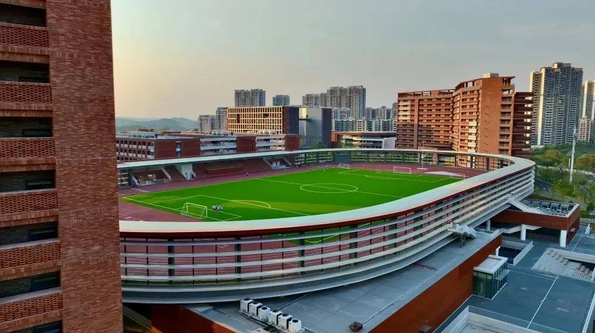

办学条件
师资力量
截止到2024年5月，学校现有专任教师133人，他们师德高尚、业务精湛、结构合理、充满活力，是一支高素质专业化创新型的教师队伍。其中，拥有高中教师资格证110人，毕业于985和211大学人数55人，这些教师具有深厚的学术造诣和丰富的教学经验。学校已有区级以上骨干教师24人，他们在教育教学改革、课程建设、教学研究等方面发挥着引领和示范作用。此外，学校教师获得区级以上综合类奖项（荣誉）110余项，这充分展示了教师们的专业素养和教育教学能力。
办学设施
学校总用地面积约10.3万平方米，总投资超过15亿元，设施设备齐全、先进，为师生的学习、工作和生活提供了有力保障。学校图书室藏书丰富，涵盖了各个学科领域，为师生提供了广阔的知识视野；阅览室环境舒适，配备了先进的电子阅读设备，方便师生随时获取最新的学术信息。器材室里，各类教学器材、实验仪器应有尽有，能够满足不同学科的教学需求。
学校拥有标准化田径场、足球场、篮球场（馆）、羽毛球场（馆）、游泳馆、网球场等活动场所，这些场所设施先进、布局合理，为师生开展体育活动提供了良好的条件。标准化田径场采用了国际先进的塑胶跑道，足球场的草坪养护良好，为学生们提供了优质的运动场地。篮球馆、羽毛球馆等室内场馆配备了专业的体育设施，无论天气如何，师生们都能进行体育锻炼。游泳馆的水质清澈，水温适宜，为学生们提供了安全、舒适的游泳环境。
